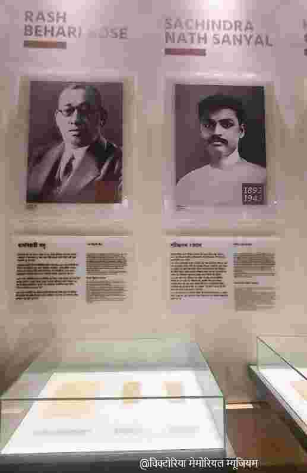
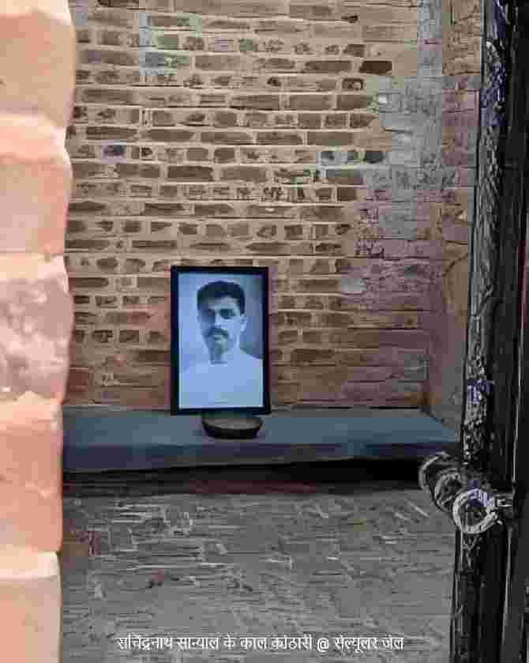
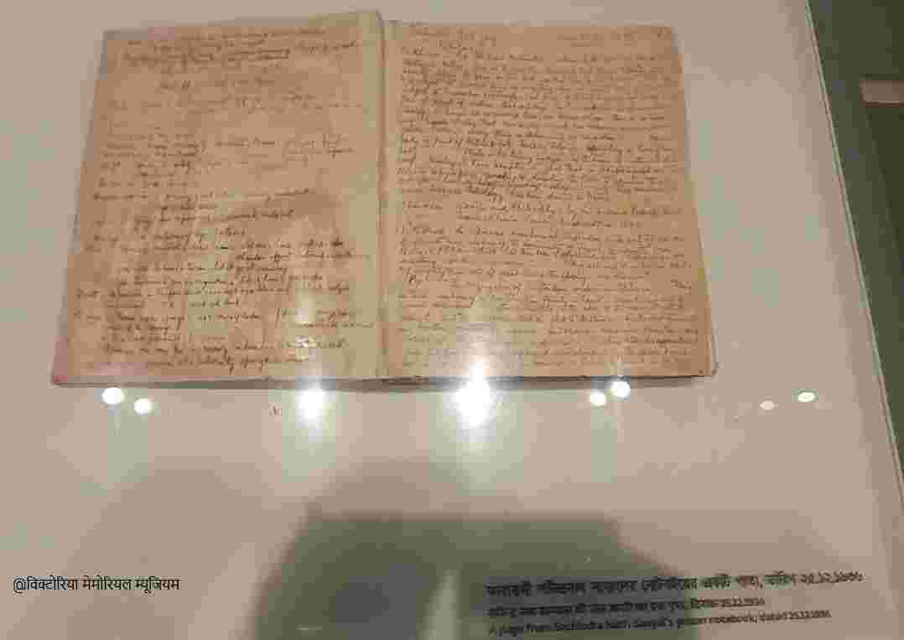
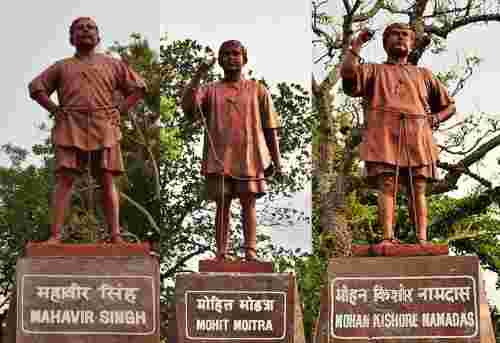
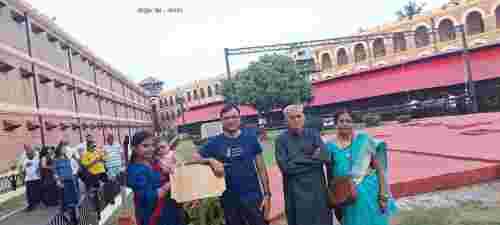

विदेह प्रथम मैथिली पाक्षिक ई पत्रिका

प्रणव कुमार झा
एचएसआरएक क्रान्तिकारी आन्दोलन, कालापानीक प्रतिरोध आ सचिन्द्रनाथ सान्यालक योगदान
अज़ादीक महासंग्राम में लाखो देशवासी अपन प्राणक आहुति देलनि, मुदा एहन विशाल जन-आंदोलन केँ एकटा ठोस आकार आ दिशा देबय में विभिन्न संगठनक भूमिका अत्यंत महत्वपूर्ण रहय अछि। भारतक स्वतन्त्रता आंदोलन मे सेहो अनेको संगठनक भूमिका आ योगदान बहुत महत्वपूर्ण रहल।यदि संगठनात्मक दृष्टिकोण सँ विचार करी तऽ भारतीय स्वतंत्रता आंदोलन केँ तीनटा प्रमुख ध्रुव मानल जा सकाय अछि। भारतीय राष्ट्रीय कांग्रेस: जे मुख्य रूपेण उदारवादी आ जन-आंदोलनक धारा केँ नेतृत्व कएलक। एचएसआरए (हिंदुस्तान सोशलिस्ट रिपब्लिकन एसोसिएशन): जकरा आदि-निर्माता क्रांतिकारी सचिंद्र नाथ सान्याल जी द्वारा प्रारंभ में HRA (हिंदुस्तान रिपब्लिकन एसोसिएशन) के रूप में स्थापित कएल गेल छल, आ बाद में भगत सिंह, चंद्रशेखर आजाद सन क्रांतिकारी द्वारा एकरा एचएसआरए रूप में विस्तारित कएल गेल। आ आजाद हिंद फौज: जे नेताजी सुभाष चंद्र बोस के नेतृत्व में देश के भीतर आ बाहर सशक्त सैन्य कार्यवाई द्वारा ब्रिटिश साम्राज्य के चूल हिला देलक। ई सभ संगठन आ नायक सभक मार्ग, विचार आ कार्यपद्धति भले भिन्न रहल होय, मुदा सभक अंतिम गंतव्य आ लक्ष्य मात्र एकटा छल 'भारतक पूर्ण स्वतंत्रता'। ताहि लेल ई तीनु संगठन के नेता सभ एक दोसर से वैचारिक मतभेद राखितो एक दोसर के सम्मान करय छलाह आ हुनक लक्ष्य के समर्थन। विगत वर्ष मे कलकत्ता के विक्टोरिया मेमोरियल से लऽ कऽ अंडमान केर सेल्यूलर जेल तक के यात्रा से जे व्यक्तिगत अनुभव प्राप्त भेल अछि ओहि मे संगठन के रूप मे एचएसआरए आ व्यक्तिगत रूप से सचीन्द्र सान्याल, बटुकेश्वर दत्त आदि नाम विशेष रूप से सभ ठाम उभरि के आयल। एहि लेख के द्वारा स्वतन्त्रता दिवस के अवसर पर ओहि अनुभव आ किछू फ़ैक्ट के साझा करबाक प्रयास अछि।
भारतक स्वतन्त्रता आन्दोलनक इतिहास कांग्रेस, सत्याग्रह, असहयोग आ भारत छोड़ो आन्दोलन तक सीमित नहि अछि। ई इतिहास ओतबे गहिराई सँ भूमिगत क्रान्तिकारी संगठन, गुप्त राजनीतिक नेटवर्क, सशस्त्र विद्रोह, कारावास, निर्वासन, भूख हड़ताल आ आत्मबलिदानक इतिहास सेहो अछि। भारतीय राष्ट्रीय आन्दोलनक एहि धारा मे बंगालक अनुशीलन समिति आ युगान्तर सँ लऽ कऽ उत्तर भारतक हिन्दुस्तान रिपब्लिकन एसोसिएशन (HRA) धरि एकटा महत्वपूर्ण वैचारिक आ संगठनात्मक विकास देखाइत अछि।
HRA केर स्थापना 1924 मे भेल। एकर प्रमुख निर्मातामे रामप्रसाद बिस्मिल, सचिन्द्रनाथ सान्याल, योगेशचन्द्र चटर्जी, अशफाक़ उल्ला खान आदि छलाह। एहि संगठनक लक्ष्य खाली ब्रिटिश शासनक विरोध नहि, बल्कि एकटा स्वतंत्र गणराज्यक स्थापना छल। HRA केर संविधानमे “United States of India” केर संघीय गणराज्यक परिकल्पना, सार्वभौमिक मताधिकार तथा मनुष्य द्वारा मनुष्यक शोषण समाप्त करबाक विचार स्पष्ट रूप सँ व्यक्त भेल छल। एहि कारणेँ HRA केँ खाली “हिंसक क्रान्तिकारी समूह” कहि देब ऐतिहासिक दृष्टि सँ अपर्याप्त अछि। 1928 मे दिल्लीक फिरोजशाह कोटला मे भेल क्रान्तिकारि सभक बैठकमे HRA केर पुनर्गठन भेल आ संगठनक नाम Hindustan Socialist Republican Association (एचएसआरए) राखल गेल। भगत सिंह, चन्द्रशेखर आजाद, सुखदेव, भगवतीचरण वोहरा, विजय कुमार सिन्हा, शिव वर्मा आ जयदेव कपूर आदि नव पीढ़ीक क्रान्तिकारि एहि प्रक्रियाक प्रमुख चेहरा छलाह। एहि परिवर्तनक संग राजनीतिक स्वतन्त्रताक लक्ष्य आर्थिक-सामाजिक समानतासँ जोड़ल गेल। ई क्रांतिकारी सभ द्वारा संगठन के नाम मे सोशलिस्ट शब्द जोडल गेल, वैह शब्द जेकरा आई किछु लोक संविधान के प्रस्तावना से निकालि देबय चाहय छथि।
बीसम शताब्दीक दोसर दशकक अन्त धरि भारतीय क्रान्तिकारी आन्दोलनक एकटा प्रमुख कमजोरी छल-ई अनेक क्षेत्रीय आ गुप्त समूहमे विभाजित छल। बंगाल मे अनुशीलन आ युगान्तर, महाराष्ट्र मे अभिनव भारत, पंजाब मे गदर आन्दोलनक प्रभाव आ उत्तर भारत मे विभिन्न गुप्त क्रान्तिकारी समूह अपन-अपन ढंग सँ ब्रिटिश शासनक विरोध करैत छल। 1919 केर जलियाँवाला बाग हत्याकाण्ड आ 1922 मे असहयोग आन्दोलनक वापसी भारतीय युवामे गम्भीर बेचैनी उत्पन्न केलक। युवा क्रान्तिकारि सभक एकटा वर्गक मान्यता छल जे खाली संवैधानिक सुधारसँ ब्रिटिश साम्राज्यवाद समाप्त नहि होयत। एहि पृष्ठभूमिमे HRA केर गठन भेल। HRA केर मूल उद्देश्य “संगठित आ सशस्त्र क्रान्ति” द्वारा भारतमे संघीय गणराज्य स्थापित करब छल। एकर संविधानमे सार्वभौमिक मताधिकारक उल्लेख महत्वपूर्ण अछि, कारण ई देखबैत अछि जे एहि क्रान्तिकारी धारा मे “स्वतन्त्रता”क अर्थ खाली अंग्रेजक विदाई नहि छल; राजनीतिक अधिकारक विस्तार सेहो छल।
1925 केर “The Revolutionary” नामक घोषणापत्र एहि वैचारिक दिशाक महत्वपूर्ण दस्तावेज अछि। एहि घोषणापत्रक निर्माणमे सचिन्द्रनाथ सान्यालक प्रमुख भूमिका छल। सरकारी Digital District Repository सेहो एहि पुस्तिकाक महत्व स्वीकार करैत अछि आ बतबैत अछि जे ई जनवरी 1925 केँ व्यापक रूप सँ वितरित भेल छल। सान्यालक सोचमे क्रान्ति खाली व्यक्तिगत साहसक प्रदर्शन नहि छल। हुनकर दृष्टिमे संगठन, विचार, अनुशासन, जनसम्पर्क आ राजनीतिक उद्देश्य सभ एक-दोसरासँ जुड़ल छल। एहि कारणेँ HRA केँ बादमे भगत सिंहक पीढ़ी समाजवादी दिशा मे विकसित कऽ सकलाह। 1928 मे HRA केर एचएसआरए मे परिवर्तन एहि वैचारिक विकासक परिणाम छल। फिरोजशाह कोटला बैठकमे युवा क्रान्तिकारि सभ स्पष्ट कएलनि जे राजनीतिक स्वतन्त्रता आर्थिक मुक्ति बिना अधूरा अछि। समाजवाद केँ संगठनक लक्ष्यक हिस्सा बनाओल गेल। चन्द्रशेखर आजादक नेतृत्वमे सैन्य पक्ष रहल, मुदा संगठनात्मक नेतृत्व अधिक सामूहिक बनाओल गेल। एहि चरणमे एचएसआरए व्यक्तिगत “heroic action” सँ आगाँ बढ़ि सामूहिक राजनीतिक चेतनाक दिशामे सेहो देखाइत अछि।
HRA केर इतिहासमे 9 अगस्त 1925 केर काकोरी ट्रेन कार्रवाई विशेष महत्व रखैत अछि। ब्रिटिश सरकारक सरकारी धनक एक खेप लऽ जा रहल ट्रेन केँ काकोरीक लग रोकि क्रान्तिकारि सभ धन पर कब्जा कएलनि। एहि धनक एकमात्र उद्देश्य क्रान्तिकारी गतिविधिक लेल संसाधन जुटेनाइ छल। ब्रिटिश सरकार एहि घटनाकेँ साम्राज्यक अधिकारक प्रत्यक्ष चुनौती मानलक। व्यापक गिरफ्तारी भेल। रामप्रसाद बिस्मिल, अशफाकुल्ला खाँ, राजेन्द्रनाथ लाहिड़ी आ रोशन सिंह केँ फाँसी देल गेल। कतेको अन्य क्रान्तिकारि सभ केँ दीर्घ कारावासक सजाय भेटल। सरकारी अभिलेख एहि घटनाक बाद HRA पर ब्रिटिश दमनक तीव्रता देखबैत अछि। सान्याल एहि केस मे गिरफ्तार भेलाह आ हुनका दुबारा आजीवन कालापानी के सजाय भेटल। एहि प्रकारेँ हुनकर जीवनमे जेल एकटा अस्थायी घटना नहि रहल अपितु हुनकर राजनीतिक जीवनक लगातार अनुभव बनि गेल।
सचिन्द्रनाथ सान्याल : क्रान्तिकारी, संगठनकर्ता आ विचारक

सचिन्द्रनाथ सान्यालक जन्म 1893 मे वाराणसी मे भेल। बहुत कम आयुमे हुनकर सम्पर्क अनुशीलन समिति सँ भेल। 1907 सँ क्रान्तिकारी गतिविधिसँ जुड़ल सान्याल धीरे-धीरे बंगालक क्रान्तिकारी नेटवर्क केँ उत्तर भारत, विशेषतः वाराणसी, पंजाब आ संयुक्त प्रान्तसँ जोड़बाक महत्वपूर्ण कड़ी बनलाह। मिनिस्ट्री ऑफ कल्चर केर अभिलेख हुनका रासबिहारी बोसक विश्वसनीय सहयोगी आ बंगाल तथा उत्तर भारतक क्रान्तिकारी नेटवर्कक बीच सेतु कहईत अछि। 1915 मे रासबिहारी बोसक संग भारतीय सैनिक सभमे विद्रोहक प्रयासमे सान्यालक भूमिका रहल। योजना सफल नहि भेल। ब्रिटिश सरकारक कार्रवाईक बाद सान्याल गिरफ्तार भेलाह आ आजीवन कारावास केर सजा देल गेल। हुनका अंडमान सेलुलर जेल (कालापानी)पठाओल गेल। 1920 केर रॉयल एमनेस्टी के अन्तर्गत हुनकर रिहाई भेल।
जेल सँ निकललाक बाद सामान्य जीवन अपनाबि चुपचाप रहबाक बदला सान्याल पुनः क्रान्तिकारी संगठन निर्माणमे लागि गेलाह। एहि प्रयासक परिणाम HRA केर निर्माणमे देखाइत अछि। सान्यालक सबसे विशिष्ट योगदान ई अछि जे ओ खाली एक्शन ओरिएंटेड रिवोल्यूशनरी नहि छलाह। ओ विचारक सेहो छलाह। हुनकर लेखन, पर्चा आ संगठनात्मक दृष्टिकोण नव पीढ़ीक क्रान्तिकारि सभ पर गहरा प्रभाव छोड़लक। ओ संगठन बनाबाय के माहिर छलाह आ स्वाइत गदर, से लऽ कऽ गांधीजी आ अनुशीलन समिति से हिंदुस्तान रिपब्लिकन एशोसिएशन धरि हर महत्वपूर्ण संगठन संग हुनकर समन्वय देखबा मे आबय छैक।

सान्यालक ‘बन्दी जीवन’ भारतीय क्रान्तिकारी साहित्यक महत्वपूर्ण दस्तावेज अछि। ई खाली आत्मकथा नहि, बल्कि ब्रिटिश औपनिवेशिक शासन, गुप्त क्रान्तिकारी संगठन, जेल जीवन, क्रान्तिकारी सभक मानसिकता आ आन्दोलनक कठिनाइ सभक प्रत्यक्ष विवरण सेहो अछि। भारत सरकारक डिजिटल डिस्ट्रिक्ट रिपोजीटरीक अनुसार बन्दी जीवन तीन भागमे लिखल आत्मकथात्मक विवरण अछि। एहि पुस्तकक विभिन्न भारतीय भाषा मे अनुवाद सेहो व्यापक रूप सँ पढ़ल गेल आ ई क्रान्तिकारी युवासभ लेल लगभग “पाठ्यपुस्तक” समान प्रभावशाली बनल। सान्यालक लेखनक महत्त्व एहि कारण सेहो अछि जे ब्रिटिश सरकार क्रान्तिकारि सभकेँ “टेररिस्ट”, “क्रिमिनल” वा “एनार्किस्ट” कहि राजनीतिक अर्थ समाप्त करबाक प्रयास करैत छल। सान्यालक लेखन एहि औपनिवेशिक आख्यानक प्रतिरोध छल। ओ क्रान्तिकारी हिंसाकेँ एकटा व्यापक राजनीतिक सन्दर्भमे रखैत छथि जतऽ औपनिवेशिक राज्य स्वयं हिंसा, दमन आ आर्थिक शोषणक संरचना बनौने छल। एहि दृष्टिकोण सँ देखला पर सान्यालक योगदान बम-पिस्तौल सँ बहुत पैघ देखाइत अछि। हुनकर वास्तविक योगदान छल क्रान्तिकारी विचार केँ संगठनात्मक रूप देब, पुरान आ नव पीढ़ीक बीच सेतु बनाएब आ लिखित राजनीतिक साहित्यक निर्माण।
सेल्यूलर जेल (कालापानी) मे 1909 सँ 1938 धरि अनेक क्रान्तिकारी पहुँचलाह। मिनिस्ट्री ऑफ कल्चर केर “Making of the cellular jail” मे विनायक दामोदर सावरकर, गणेश दामोदर सावरकर, प्रिथ्वी सिंह आजाद, पंडित रामरखा, महावीर सिंह, सचिन्द्रनाथ सान्याल, मोहन किशोर नामदास, मोहित मोइत्रा आ बटुकेश्वर दत्त सहित अनेक नाम देल गेल अछि। सेल्यूलर जेलक स्मारक गैलरी आ लाइट एंड साउंड शो के वृत्तचित्र सँ गुजरैत काल, हमर साक्षातकार ओहि सैंकड़ो कैदी सभक नाम आ स्मृति सँ होइत अछि, जकरा एहि काल-कोठरी सभ में अमानवीय यातना सहय पड़ल छल। एहि में सर्वाधिक नाम बंगाल सँ अछि, आ दोसर स्थान पर संभवतः पंजाब सँ। 'हिंदुस्तान रिपब्लिकन एसोसिएशन' (HRA) के संस्थापक सचिंद्र नाथ सान्याल आ एचएसआरए के महान वैचारिक क्रांतिकारी व कुशल संगठनकर्ता बटुकेश्वर दत्त एहि काल-कोठरी सभ में संघर्ष करैत दीर्घ काल बितौने छलाह। एहि एचएसआरए के क्रांतिकारी महावीर सिंह अपन साथी सभ संग जेलक अमानवीय स्थिति के विरुद्ध एकटा ऐतिहासिक भूख हड़ताल केने छलाह। जेलर बेरी के आदेश पर जखन अंग्रेज सिपाही सभ हुनका जबरन नाक में नली लगाकय दूध पिआवय के प्रयास केलक, तँ ओ श्वास नली सँ होइत फेफड़ा में चलि गेल, जाहि सँ हुनक शहादत भेल। एहि भूख हड़ताल में हुनक साथी मोहित मोइत्रा आ मोहन किशोर दास सेहो अपन प्राणक आहुति देलनि।
सान्यालक जीवन केँ सेल्यूलर जेल (कालापानी) केर इतिहाससँ अलग कऽ कऽ बुझब कठिन अछि। हुनकर पहिल कारावास 1915 सँ 1920 धरि रहल। बादमे HRA केर निर्माण, काकोरी प्रकरण आ पुनः कारावास हुनकर जीवनक दोसर चरण बनल। मिनिस्ट्री ऑफ कल्चर केर एकटा विस्तृत विवरणमे उल्लेख अछि जे सान्याल 1915 मे प्रथम बेर सेल्यूलर जेल (कालापानी) पठाओल गेलाह, 1920 मे रिहा भेलाह, HRA निर्माणमे योगदान देलाह आ काकोरीक बाद फेर सजाय पाबि 1927 मे अंडमान पठाओल गेलाह। 1937 मे हुनकर रिहाई भेल। एहि दृष्टिसँ सान्याल भारतक स्वतन्त्रता आन्दोलनक अत्यन्त असाधारण व्यक्तित्व छथि। हुनकर जीवनक बहुत पैघ भाग या त भूमिगत गतिविधिमे बितल अथवा जेलमे। बन्दी जीवन एहि बातक प्रमाण अछि। सान्याल जेलक अनुभव केँ लिखित राजनीतिक स्मृतिमे बदलि देलनि। हुनकर लेखन नव पीढ़ीक क्रान्तिकारि सभक लेल विचारक स्रोत बनल। एहि कारणेँ सान्यालक विश्लेषण खाली एकटा क्रान्तिकारी कार्यकर्ता रूपसँ नहि, बल्कि revolutionary intellectual केर रूपमे सेहो करबाक चाही। सान्याल कालापानी मे सर्वाधिक समय तक सजा काटय बला लोक मे से छलाह।

भारतीय लोकप्रिय स्मृतिमे भगत सिंह, चन्द्रशेखर आजाद, राजगुरु आ सुखदेवक नाम अत्यन्त प्रसिद्ध अछि। मुदा एहि पीढ़ीक पाछाँ एकटा पुरान पीढ़ी छल जे संगठन, विचार आ अनुभवक आधार तैयार कएलक। सान्याल एहि पीढ़ीक प्रतिनिधि छलाह। ओ रासबिहारी बोसक नेटवर्कसँ जुड़लाह, प्रथम विश्वयुद्धक विद्रोहक प्रयासमे सहभागी भेलाह, कालापानी गेलाह, रिहा भऽ HRA निर्माणमे योगदान देलाह, काकोरीक बाद फेर जेल गेलाह आ अन्ततः बन्दी जीवन सन क्रांतिकारी दस्तावेज छोड़ि गेलाह। हुनकर सबसे पैघ विरासत क्रान्तिकारी परम्पराक पीढ़ीगत हस्तान्तरण अछि। एहि दृष्टिसँ सान्याल केँ भगत सिंहक पूर्वज मात्र नहि बल्कि एकटा institution-builder केर रूपमे देखबाक चाही।
ओना त तुलना करब उचित नै छैक, मुदा आई-काल ई चलन मे छैक तें विक्टोरिया मेमोरियल म्यूजियम आ सेल्यूलर जेल के यात्रा के क्रम मे ई विचार मन मे आयल जे भारतीय स्वतंत्रता आंदोलन मे सचिन्द्रनाथ सान्याल के भूमिका आ प्रभाव सावरकर सं कतेकौ बेसी छैक, विशेषकर सेल्यूलर जेल के अनुभव के दृष्टिगत। एहि लेल हमर निजी मत अछि जे अंडमान जेल के सावरकर के बदला सान्याल सं बेसी जोड़ि कऽ देखल जेबाक चाहिए। ऐतिहासिक दस्तावेज़ सभक आधार पर सान्याल आ सावरकरक जेल कार्यकाल, वैचारिक दृढ़ता, आ रिहाईक बादक गतिविधियोंक तुलना निम्नलिखित बिंदु सभ पर कएल जा सकैत अछि:
सावरकरक क्रान्तिकारी राजनीति प्रारम्भिक चरणमे अभिनव भारत, 1857 केर पुनर्व्याख्या आ सशस्त्र क्रान्तिकेन्द्रित राष्ट्रवादसँ जुड़ल छल। बादक दशकमे हुनकर राजनीतिक विचार हिन्दुत्व, सांस्कृतिक राष्ट्रवाद आ हिन्दू राजनीतिक पहचानक दिशामे विकसित भेल।
सान्यालक राजनीतिक यात्रा अलग दिशा मे गेल। हुनकर HRA केर कल्पना एकटा Republican India केर छल, जाहिमे सार्वभौमिक मताधिकार आ शोषणविहीन समाजक विचार स्पष्ट रूप सँ व्यक्त छल। HRA केर मूल संविधानमे “Federated Republic” आ universal suffrage केर उल्लेख एहि बातक प्रमाण अछि। 1928 मे HRA सँ एचएसआरए केर संक्रमणमे एहि republican tradition पर समाजवादी विचारक प्रभाव आओर स्पष्ट भेल। भगत सिंहक पीढ़ी आर्थिक समानता आ समाजवाद केँ स्वतन्त्रताक लक्ष्यसँ जोड़लक। एहि वैचारिक विकासक प्रत्यक्ष संस्थापक सान्याल 1928 मे जेलमे छलाह, मुदा हुनकर HRA निर्माणक बौद्धिक विरासत एचएसआरए धरि पहुँचि चुकल छल।
सावरकर आ सान्यालक तुलना करैत समय सर्वाधिक विवादित विषय हुनकर जेल सँ रिहाई लेल देल गेल petitions अछि। सरकारी अभिलेखमे 14 नवम्बर 1913 केर सावरकरक petition केर उल्लेख उपलब्ध अछि। भारत सरकारक लोकसभा उत्तरमे सेहो एहि दस्तावेजक archival existence स्वीकार कएल गेल अछि। सावरकर 1911, 1913 तथा बादक समयमे ब्रिटिश सरकारक समक्ष petitions प्रस्तुत कएलनि। एहि petitions केँ समर्थक अलग रणनीतिक प्रयास मानैत छथि, जखनकि आलोचक एकरा राजनीतिक समर्पणक प्रमाण मानैत छथि। इतिहासकार लेल उचित तरीका ई अछि जे petition केर वास्तविक पाठ, ओकर राजनीतिक सन्दर्भ आ बादक व्यवहार-तीनू केँ अलग-अलग देखल जाय।
सान्यालक बन्दी जीवन मे सावरकरक रिहाई सम्बन्धी प्रश्नक चर्चा सेहो भेटैत अछि। उपलब्ध उद्धरणसभमे सान्याल ई प्रश्न उठबैत छथि जे यदि हुनकर अपन petition आ सावरकरक petition मे समानता छल, तँ दुनूकेँ समान ढंगसँ रिहाई किएक नहि भेटल। हुनकर विश्लेषणमे बंगालक राजनीतिक दबाव, महाराष्ट्रक क्रान्तिकारी परिस्थिति तथा सावरकर पर लगल हत्या-संबंधी आरोपक भूमिका बताओल गेल
• सावरकर केँ 1911 मे 50 वर्षक कारावास सजा सुना कऽ अंडमान पठायल गेल छल। ओ 1911 सँ 1921 धरि (लगभग 10 वर्ष) सेल्यूलर जेल मे रहलाह। सान्याल अपन 50 वर्षक कुल आयु मे सँ २५ वर्ष सँ अधिक समय विभिन्न जेल सभ मे बितओने छलाह। ओ दु-दु बेर आ कुल 15 वर्ष काला पानीक अमानवीय यातना सहलथि।
• सावरकर 1911 सँ 1920 क बीच ब्रिटिश सरकार केँ कम्पाउंडिंग आ रिहाई लेल अनेक दया याचिका दाखिल कएलथि, जाहि मे ओ स्पष्ट रूप सँ लिखलथि जे ओ ब्रिटिश सरकारक प्रति वफादार रहताह आ भविष्य मे कोनो राजनैतिक गतिविधि मे भाग नहि लेताह। सान्याल सेहो 1920 क शाही क्षमादानक समय पत्र लिखलथि, मुदा ओ अपन क्रांतिकारी सिद्धांतों या स्वाभिमान सँ कोनो वैचारिक समझौता नहि कएलथि। ओ राजनैतिक बंदीक अधिकारक लेल लड़लाह आ रिहा होइते पुनः सशस्त्र क्रांति मे कूदि पड़लाह।
• 1921 मे अंडमान सँ मुख्यभूमि (रत्नागिरी जेल) अनलाक बाद आ 1924 मे सशर्त रिहा भेलाक बाद सावरकर ब्रिटिश विरोधी कोनो आंदोलन मे भाग नहि लेलथि। ओ अपन पूरा ध्यान 'हिंदू महासभा' आ हिंदुत्वक सिद्धांत पर केंद्रित कएलथि। 1920 मे प्रथम काला पानी सँ छूटिते सान्याल HRA क गठन कएलथि। काकोरी कांड मे पुनः गिरफ्तार भऽ कऽ दोसर बेर अंडमान भेजल गेलाह। 1937 मे प्रांतीय सरकारक गठनक बाद रिहा भेलाह, मुदा द्वितीय विश्वयुद्धक समय 1940 मे हुनका पुनः जेल मे बन्द कऽ देल गेल। जेल मे कड़ा यातना आ क्षयरोग भऽ गेलाक कारण 7 फरवरी 1942 केँ ओ शहीद भऽ गेलाह।
• वैचारिक रूप से जत सान्याल समावेशी, धर्मनिरपेक्ष, क्रांतिकारी समाजवादी छलाह ओत्तए सावरकर हिंदुत्व, आ राजनीतिक हिंदू राष्ट्रवाद के पुरोधा छलाह । सान्याल अनुशीलन समिति, गदर पार्टी , एचएसआरए आ किछु हद तक गांधीजी के आंदोलन से सेहो जुडल छलाह, ओतहि सावरकर अभिनव भारत आ रिहाई के बाद हिन्दू महासभा से जुडल रहलाह।
• सावरकर शुरुआती समय मे जतय मदन लाल ढींगरा सन महान क्रांतिकारी अनुयाई तैयार केलाह तऽ बाद मे नाथूराम गोडसे सन चेला सेहो तैयार केलाह। जखन कि सान्याल भगत सिंह, चन्द्रशेखर, आजाद, वैकुंठ शुक्ल, आदि सैंकड़ों एचएसआरए आ अनुशीलन समिति के क्रांतिकारी के तैयार करय मे महत्वपूर्ण भूमिका मे छलाह ।
बटुकेश्वर दत्त : एसेम्बली बम कांड सँ कालापानी धरि
बटुकेश्वर दत्त एचएसआरए केर प्रमुख कार्यकर्ता छलाह आ भगत सिंहक निकट सहयोगी। 8 अप्रैल 1929 केँ दिल्लीक सेंट्रल लेजिस्लेटिव एसेम्बली मे भगत सिंहक संग बम फेकबाक कार्रवाईमे हुनकर भूमिका रहल। एहि घटनाक उद्देश्य अन्धाधुन्ध हत्या नहि बल्कि औपनिवेशिक सरकारक कानक बहिरपन तोड़बाक प्रतीकात्मक प्रयास छल। दुनू क्रान्तिकारि भागलाह नहि, अपितु गिरफ्तारी स्वीकार कएलनि, जाहिसँ न्यायालय स्वयं राजनीतिक प्रचारक मंच बनि जाए। दत्त केँ आजीवन कारावासक सजाय भेटल आ अन्ततः हुनका सेल्यूलर जेल (कालापानी) पठाओल गेल। सेल्यूलर जेल (कालापानी) मे दत्त आ अन्य राजनीतिक कैदी सभ जेलक अमानवीय व्यवहारक विरोधमे भूख हड़ताल आ सामूहिक प्रतिरोधक हिस्सा बनलाह। एहि प्रतिरोधक अर्थ खाली व्यक्तिगत सुविधा नहि छल। राजनीतिक कैदी सभ चाहैत छलाह जे हुनका सामान्य अपराधी सभसँ अलग राजनीतिक कैदीक रूपमे मान्यता भेटय।
महावीर सिंह : एचएसआरए केर एकटा विस्मृत शहीद

महावीर सिंह एचएसआरए आ भगत सिंहक क्रान्तिकारी नेटवर्कसँ जुड़ल छलाह। ओ भगत सिंह, बटुकेश्वर दत्त आ दुर्गावती देवीक बचावमे सेहो सहयोगी छलाह। लाहोर कन्स्पेरेसी केस मे गिरफ्तार भेलाक बाद हुनका कालापानी पठाओल गेल। 1933 मे सेल्यूलर जेल (कालापानी) मे राजनीतिक कैदी सभक भूख हड़तालक दौरान हुनकर मृत्यु फोर्स-फीडिंग केर परिणामस्वरूप भेल। 12 मई 1933 केँ कैदी सभ हड़ताल शुरू कएलनि। मांग सभमे भोजन, स्वच्छता, पढ़बाक सुविधा, मानवीय व्यवहार आ मेनलेंड मे राजनीतिक कैदीक रूपमे पुनः पठेनाइ प्रमुख छल। ब्रिटिश प्रशासन बलपूर्वक भोजन देबाक प्रयास केलक। एहि प्रक्रियामे महावीर सिंहक मृत्यु भेल। सरकारी स्रोत हुनकर मृत्यु केँ कारण पक्षाघात (shock) लिखल गेल छल, जखनकि राजनीतिक कैदी सभक दृष्टिकोणमे ई फोर्स फीडिंग केर परिणाम छल। महावीर सिंहक बलिदान एचएसआरए केर एकटा महत्वपूर्ण विशेषता उजागर करैत अछि जे क्रान्ति खाली बम फेकबाक नाम नहि छल। जेलक भीतर भोजन छोड़ि देब, शारीरिक यातना सहब आ मृत्युक सामना करब सेहो प्रतिरोधक एकटा रूप छल। सेल्यूलर जेल (कालापानी) केर इतिहासमे 1933 केर भूख हड़ताल एकटा निर्णायक घटना अछि। राजनीतिक कैदी सभक मांग खाली व्यक्तिगत सुविधा नहि छल। ओ सभ चाहैत छलाह जे ब्रिटिश सरकार हुनका अपराधी नहि बल्कि राजनीतिक कैदीक रूपमे स्वीकार करय। महावीर सिंह, मोहित मोइत्रा आ मोहन किशोर नामदास एहि हड़तालमे बलिदान देलनि। मिनिस्ट्री ऑफ कल्चर केर अभिलेख स्पष्ट करैत अछि जे ब्रिटिश अधिकारी बलपूर्वक भोजन करबाबैत छलाह आ एहि प्रक्रियामे ई तीनू कैदी मरि गेलाह। एहि घटनाक महत्व एहि कारण सेहो अछि जे जेलक प्रतिरोध मेनलैंड धरि पहुँचल। जेल प्रशासनक नियंत्रणक बावजूद राजनीतिक समाचार बाहर पहुँचल आ भारत भरिमे प्रतिक्रिया भेल। एहि प्रकारेँ सेल्यूलर जेल (कालापानी) ब्रिटिश शासनक लेल उलटा परिणाम उत्पन्न करय लागल। जे स्थान क्रान्तिकारि सभकेँ देशक जनतासँ काटबाक लेल चुनल गेल छल, ओहि स्थानक यातना स्वयं स्वतन्त्रता आन्दोलनक नैतिक पूँजी बनि गेल।
योगेन्द्र शुक्ल : उत्तर भारतक क्रान्तिकारी नेटवर्क आ कालापानी
बिहारक योगेन्द्र शुक्ल एचएसआरए केर प्रारम्भिक क्रान्तिकारी नेटवर्कक महत्वपूर्ण व्यक्ति छलाह। ओ बादमे भगत सिंह आ बटुकेश्वर दत्तक प्रशिक्षण आ संगठनात्मक गतिविधिसँ सेहो जुड़लाह। 1932 सँ 1937 धरि हुनकर सेल्यूलर जेल (कालापानी) मे कारावास रहल। योगेन्द्र शुक्लक उदाहरण देखबैत अछि जे एचएसआरए केर प्रभाव खाली पंजाब वा उत्तर प्रदेशक शहरी युवासभ धरि सीमित नहि छल। बिहार, उत्तर प्रदेश आ अन्य क्षेत्रमे सेहो एकटा व्यापक क्रान्तिकारी नेटवर्क विकसित भऽ रहल छल। जेल सँ बाहर अएलाक बाद योगेन्द्र शुक्ल काँग्रेस सोशलिस्ट पार्टी केर निर्माणमे सेहो महत्वपूर्ण भूमिका निभौलनि। एहि प्रकारेँ क्रान्तिकारी धारा आ समाजवादी राजनीतिक धारा बीचक सम्बन्धक अध्ययनमे हुनकर जीवन अत्यन्त उपयोगी अछि।

भारतीय स्वतन्त्रता आन्दोलनक इतिहासक लोकप्रिय संस्करण अक्सर किछु चुनिन्दा नामक इर्द-गिर्द घूमैत अछि। ई स्वाभाविक अछि, कारण भगत सिंह आ साथीक शहादत, गांधीजीक सत्याग्रह वा सुभाषचन्द्र बोसक आजाद हिन्द फौज सन मूवमेंटक प्रतीकात्मक शक्ति अत्यन्त पैघ अछि। मुदा शोधपरक इतिहासक उद्देश्य खाली लोकप्रिय प्रतीक सभ केँ दोहरायब नहि, बल्कि हुनकर बीचक सम्बन्ध आ कम चर्चित व्यक्तित्व सभ केँ समझब सेहो अछि। सान्याल एहि दृष्टिसँ अत्यन्त महत्वपूर्ण छथि। बटुकेश्वर दत्तक जीवन सेहो एकरा उजागर करैत अछि। 1929 मे भगत सिंहक संग इतिहासक एकटा सर्वाधिक चर्चित कार्रवाईमे सहभागी होइतो दत्तक नाम बहुत कम चर्चित रहल। यद्यपि हुनकर सेल्यूलर जेल (कालापानी) केर जीवन, भूख हड़ताल आ दीर्घकालीन कारावास स्वतन्त्रता आन्दोलनक त्यागक एकटा अलग रूप प्रस्तुत करैत अछि।
महावीर सिंहक बलिदान तऽ आओर गम्भीर प्रश्न उठबैत अछि जे की इतिहासमे शहादतक मूल्य खाली फाँसीक फन्दासँ निर्धारित होयत? यदि नहि, तँ सेल्यूलर जेल (कालापानी) मे बलपूर्वक भोजन कराबैत समय मृत्यु स्वीकार करनिहार महावीर सिंह आ हुनकर साथी सभ सेहो भारतीय स्वतन्त्रता आन्दोलनक प्रमुख शहीद छथि।
HRA सँ एचएसआरए धरि भारतीय क्रान्तिकारी आन्दोलनक यात्रा खाली संगठनक नाम बदलबाक इतिहास नहि अछि। ई भारतीय युवामे राजनीतिक विचारक परिवर्तनक इतिहास सेहो अछि - औपनिवेशिक शासनक विरोध सँ राजनीतिक गणराज्यक कल्पना धरि, आ तकर बाद समाजवाद, आर्थिक समानता आ जनाधिकारक प्रश्न धरि। HRA केर संविधानमे सार्वभौमिक मताधिकार आ संघीय गणराज्यक परिकल्पना एहि आन्दोलनक राजनीतिक गहराइ केँ प्रमाणित करैत अछि। 1928 मे एचएसआरए केर समाजवादी पुनर्गठन एहि विचारकेँ आओर व्यापक बनौलक।
सेल्यूलर जेल (कालापानी) एहि इतिहासक दोसर ध्रुव अछि। ब्रिटिश सरकार जे जेल भारतीय क्रान्तिकारी सभ केँ मुख्यभूमिसँ काटि देबाक लेल बनौने छल, ओहि जेलमे राजनीतिक कैदी सभ अत्यंत अमानवीय प्रतारणा के सहैत नब संगठन, अध्ययन, विचार-विमर्श आ भूख हड़तालक माध्यमसँ प्रतिरोधक परम्परा कायम कएलनि। 1933 केर महावीर सिंह, मोहित मोइत्रा आ मोहन किशोर नामदासक बलिदान तथा 1937 केर व्यापक हड़ताल एहि प्रतिरोधक शिखर छल।
सचिन्द्रनाथ सान्याल एहि समग्र इतिहासमे एकटा सेतु छथि। ओ बंगालक पुरान क्रान्तिकारी परम्परा आ उत्तर भारतक नब गणतांत्रिक क्रान्तिकारी आन्दोलनक बीच संबंध स्थापित कएलनि। ओ भूमिगत कार्यकर्ता छलाह, संगठनकर्ता छलाह, विचारक छलाह, लेखक छलाह आ दीर्घकालीन राजनीतिक कैदी सेहो छलाह।
सबसे महत्वपूर्ण निष्कर्ष ई अछि जे भारतीय स्वतन्त्रता आन्दोलन एकध्रुवीय आन्दोलन नहि छल। गांधीवादी अहिंसा, संवैधानिक राजनीति, किसान आन्दोलन, मजदूर आन्दोलन, क्रान्तिकारी संगठन, समाजवादी विचार, गदर परम्परा, आजाद हिन्द फौज सभ अपन-अपन ढंगसँ औपनिवेशिक शासनक आधार कमजोर करैत रहल। सेल्यूलर जेल (कालापानी) एहि बहुध्रुवीय संघर्षक एकटा अद्भुत प्रतीक अछि। कालापानीक कोठरीमे बन्द क्रान्तिकारि सभक शरीर केँ ब्रिटिश शासन अलग कऽ सकल, मुदा विचार केँ नहि। हुनकर भूख हड़ताल, लेखन, संगठन आ बलिदान मेनलैंड धरि पहुँचल। एहि अर्थमे सेल्यूलर जेल (कालापानी) औपनिवेशिक दमनक विरुद्ध भारतीय राजनीतिक इच्छाशक्तिक स्मारक अछि। आ एहि स्मारकक केन्द्रमे सचिन्द्रनाथ सान्याल सन व्यक्तित्व केँ पुनः स्थापित करब आवश्यक अछि। कारण स्वतन्त्रता ओहि लोक सभक सेहो देन अछि जे दशक-दर-दशक संगठन बनबैत रहलाह, जेल जाइत रहलाह, लिखैत रहलाह, नब पीढ़ी केँ तैयार करैत रहलाह आ अपन सम्पूर्ण जीवनकेँ स्वतन्त्र भारतक कल्पनाक लेल समर्पित कऽ देलनि। सचिन्द्रनाथ सान्याल आ बटुकेश्वर दत्त सन स्वतन्त्रता सेनानीक जीवन एहि सत्यक अत्यन्त सशक्त उदाहरण अछि।
स्रोत आ सन्दर्भ
- भारत सरकार, मिनिस्ट्री ऑफ कल्चर दस्तावेज़
- अंडमान निकोबार प्रशासन - History of Kala Pani
- District South अंडमान प्रशासन - सेल्यूलर जेल (कालापानी)
- HRA Constitution, 1924
- भारत सरकार, PIB - सेल्यूलर जेल (कालापानी)
- अंडमान और विक्टोरिया मेमोरियल कलकत्ता यात्रा अनुभव
-प्रणव कुमार झा, ग्राम गोरापुर जिला बेगूसराय | संप्रति: एनबीईएमएस, नई दिल्ली
अपन मंतव्य editorial.staff.videha@zohomail.in पर पठाउ।
विदेहमे सभठाम ताकू / Search all Videha
Static full-text search · Pagefindलेखक/शीर्षक/अंक/वर्ष — खोज-विधा। गद्य/पद्य/शोध current/static + पुरान Videha/Sadeha contents खोजैत अछि। पोथी pothi.htm केर पूर्ण listing, श्रव्य-दृश्य Audio_Video.htm केर पूर्ण listing, पञ्जी videha-sadeha/panji-shards GitHub data, आ थेसारस/शब्दकोश videha-ejournal.github.io/data GitHub JSON corpus केँ query करैत अछि आ दूनू Quiz corpus मे dictionary/vocabulary/शब्दार्थ-सम्बन्धी प्रश्नोत्तरी परिणाम सेहो जोड़ैत अछि। Quiz videha-quiz आ GitHub user-site दूनू bilingual quiz corpus खोजैत अछि। Roman/IAST + देवनागरी cross-script search समर्थित। Issue/Year लेल संख्या दिअ। PDF-अभिलेख archive.org/VidehaAndSadeha सूची खोजैत अछि।